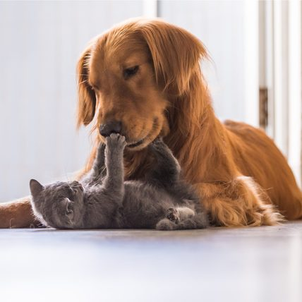

Veterinario a domicilio las 24* horas los 365 días al año.
Prácticas médicas con material descartable en el domicilio sin costos extras.
Dentro de la emergencia se realizarán las prácticas, (posibles dentro del domicilio) que el
profesional crea necesario para preservar la salud de la mascota.
Informe al dueño, que incluirá diagnóstico presuntivo detallando la medicación administrada para ser
presentado ante su veterinario de cabecera, donde constará el procedimiento que se le realizó a tu
mascota.
En caso de no contar con un veterinario de cabecera, nosotros tenemos convenio con un centro
asistencial integral completo (No dejamos a su mascota a la deriva) donde le brindaremos la atención
necesaria, que incluye ecografías, electrocardiogramas, ecocardiogramas, radiografías, cirugías, análisis de
laboratorio, entre muchas otras cosas con descuentos para nuestros socios.
Atención por videollamada, en caso de ser necesario (creemos que en una emergencia es primordial la
presencia del veterinario).
Línea telefónica exclusiva para nuestros socios.
*Se cobrará un plus de lunes a sábados en los horarios de 20.00 a 8.00 horas; los domingos y feriados durante
todo el día.